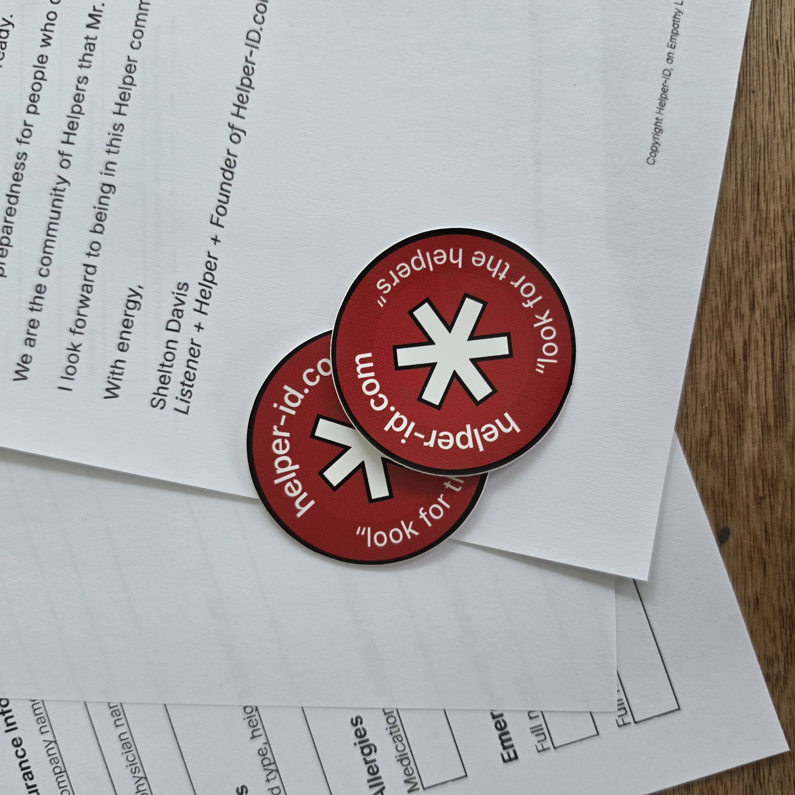
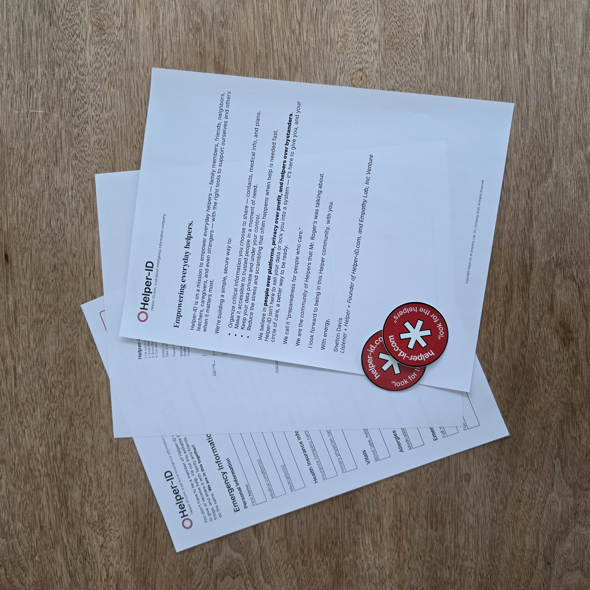

A free 45-minute program for any community that wants to be more ready — for themselves and for each other.
Request This Talk →

This isn't a product demo. It's a community conversation about what it means to be genuinely ready — and how a small amount of preparation can make a real difference when it matters most.
Most people have good intentions around emergency preparedness. Almost none of them follow through — and the reasons why are worth talking about.
When someone needs help — a neighbor, a stranger, a family member — what do the people helping them actually need to know? And where is that information right now?
A look at Helper-ID — how it works, what it does, and what it doesn't do. Everyone in the room can leave with something useful today.
Open conversation. Attendees can fill out their free emergency contact PDF before they leave — no account, no email required.
This talk was built for the Fayette County community and has grown into something that fits anywhere people gather — because emergency preparedness isn't limited to one kind of community.
There is no speaker fee. Shelton does this because he believes communities are safer when more people are prepared. That said, there are real costs to making it happen — here's how it works.
Lunch or gas money is always appreciated — and always optional. If your organization wants to cover costs formally, a donation to Empathy Lab, Inc. is welcome.
Out-of-town engagements require travel sponsorship to make the trip possible. Reach out and we'll figure out what works for your community.
Organizations that want to sponsor a talk for their community or underwrite an engagement for another community are encouraged to get in touch.
In-person is ideal. Your space, your community, your crowd. We bring the conversation — you bring the people.
We know the first question. Here's the plain answer.
When someone fills out the free emergency contact PDF — at an event or online — that information never touches our servers. It goes directly to their inbox. We don't see it, store it, or use it.
For members who choose the full Helper-ID service (the NFC tag + hosted profile), we do hold their emergency information — that's the point. It is never shared, sold, or used for any purpose other than displaying their profile when they choose to share access.
Helper-ID is funded entirely by recurring memberships. There is no advertising, no data brokering, and no third-party sharing. The product only works if people trust it.
Shelton is the founder of Empathy Lab, Inc. and the creator of Helper-ID. He built Helper-ID after noticing how many people — including people he loved — had no accessible emergency information on them and no simple way to create it.
His work is rooted in the belief that being prepared is an act of care — for yourself and for the people around you. Mr. Rogers said it best: look for the helpers. Shelton's goal is to make more of them.
Send an email with your community's name, location, and a rough sense of timing. We'll take it from there.
Email Shelton →